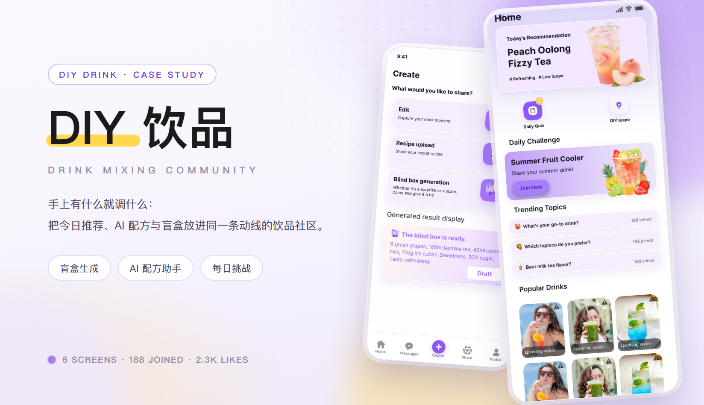
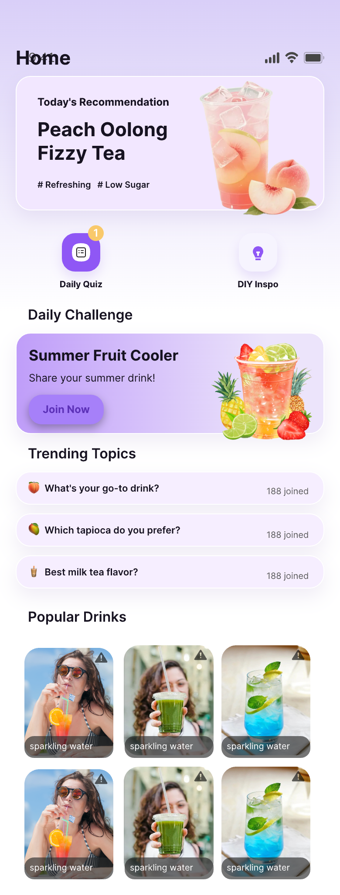
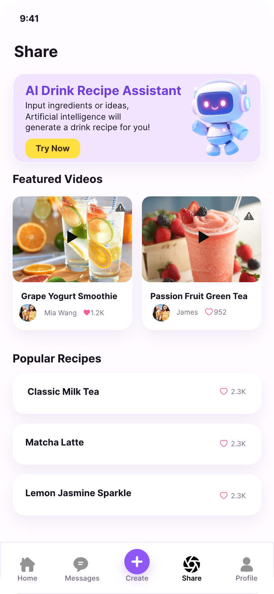
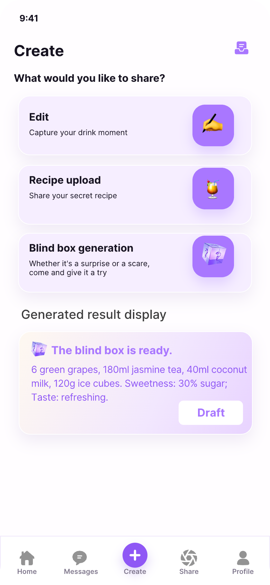
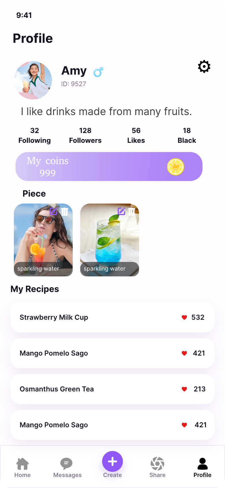
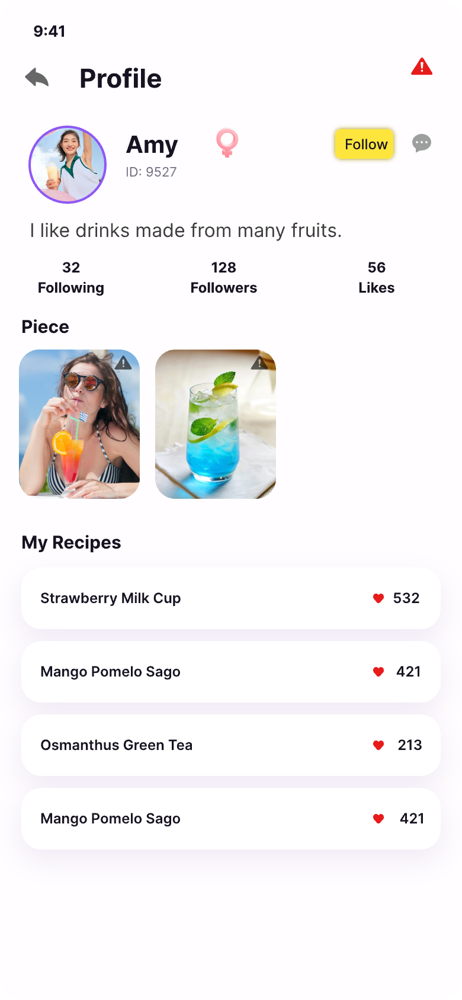
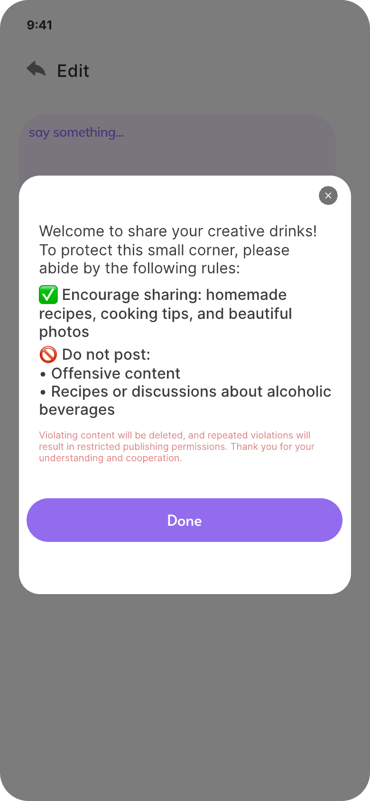

DIY 饮品 · 自己调一杯的饮品社区 App
喝的东西从来不缺，缺的是「今天调点什么」：奶茶店的选择已经够多，但自己在家弄一杯，配方全靠刷短视频碰运气，试错成本全落在那杯难喝的饮料上。这个 App 把「试一杯」拆成三种成本递增的入径——首页每天给一杯推荐和一个挑战，分享页让 AI 按你手上的材料出配方，创作页还留了一个盲盒：什么都不用想，摇一杯出来。整套界面按一屏一屏铺完，不是几张效果图。
主视觉

项目背景
饮品社区 · 从「收藏配方」到「动手调一杯」
这款 App 面向愿意在家动手的年轻饮者：会买茶包、会囤水果，也会为了自制一杯柠檬茶去买一个雪克杯。旧版是一个按时间排的配方流——收藏夹里躺着几十条配方，真正动手的次数一只手数得过来；卡住人的从来不是「没有配方」，而是「手上这几样东西能做什么」，以及「照着做完到底对不对」。
重做把「动手」这件事拆成三段，各给一个入口：首页负责给方向（今日推荐、每日挑战、话题），分享页负责给配方（AI 助手按材料生成，Featured Videos 看别人怎么做），创作页负责把结果留下来（拍一张、传配方，或者直接抽盲盒）。盲盒不是噱头：它把「不知道做什么」这种最常见的状态，变成一次成本极低的摇一摇，摇出来的结果带完整克数与甜度，可以存草稿再改，也可以直接发出去。
设计策略
三种入径，一套卡片
- 首页第一屏只放三样东西：一张今日推荐大卡（饮品实拍压在右侧，左侧 Today's Recommendation + 标题 + # Refreshing / # Low Sugar 两枚话题），一行两枚功能入口（Daily Quiz 带角标 1、DIY Inspo），再接一条 Daily Challenge。推荐每天换内容，位置与高度不动。
- 首页往下是「先参加、再浏览」的顺序：Daily Challenge 用整条薰衣草卡接住参与（标题 Summer Fruit Cooler + 一句 Share your summer drink! + Join Now 胶囊），Trending Topics 用三条等高行（emoji + 问题 + 188 joined），最后才是 Popular Drinks 双列 4:5 竖图，缩略图底部压一条半透明标签。
- Share 页按「先让 AI 帮你想，再看别人怎么做，最后看榜单」排：顶部一张 AI Drink Recipe Assistant 卡（紫色标题 + 三行说明 + 奶油黄 Try Now + 右侧 3D 机器人），下面 Featured Videos 双列视频卡（播放图标 + 右上时长角标 + 作者行 + 点赞数），再往下 Popular Recipes 三条白卡只留名字与点赞。
- Create 页把三种创作方式并排成三张等高卡（Edit / Recipe upload / Blind box generation），每张右侧一颗紫色圆角图标；下面 Generated result display 是盲盒的结果卡——一句结论 + 一行用逗号连起来的配方（6 green grapes, 180ml jasmine tea, 40ml coconut milk, 120g ice cubes）+ 两个可判断的参数（Sweetness 30% sugar / Taste: refreshing），右下角一颗 Draft。结果先落草稿，不直接发。
- 个人中心把「我调过什么」放得比「我是谁」重：头像 + 名字 + 性别 + ID 一行，一句签名，四项数据（Following / Followers / Likes / Black），一条 My coins 渐变条（999 + 柠檬图标），然后 Piece 双列作品、My Recipes 点赞列表；他人主页同一套骨架，只多一颗 Follow 与一颗私信。发布进入编辑前先弹一次社区规则，确认后才落笔。
部分界面截图
这个 App 是按整站交付的 · 这里挑 6 屏
这次交付的是整个 App 的主界面，不是几张效果图：Home、Share、Create、个人中心、他人主页，以及发布前的社区规则弹窗，连同底部五格 tab（Home / Messages / Create / Share / Profile，中间是一颗紫色 FAB）一起出稿。下面 6 屏全部来自设计稿原图。
挑这 6 屏，是因为它们各自回答一个不同的问题——今天喝什么（Home）、配方从哪来（Share）、怎么把自己的那杯留下（Create）、我调过什么（个人中心）、别人值不值得关注（他人主页），以及什么不能发（规则弹窗）。






视觉语言
紫雾白底 · 浅薰衣草 · 主色紫 · 奶油黄 · 近黑
底色是一张带一点紫的冷白 #f7f4fd，不是纯白：饮品实拍压在上面不带灰，浅紫卡片叠上去也有边界。卡片统一用浅薰衣草 #efe7fd，只承担「这是一块可以点的内容」，不做第二种颜色。主色紫 #a97bf0 只出现在三处——图标底、按钮与金币条，且金币条用一个 96° 的渐变从 #c9a6fb 走到 #9a68ec，让「攒到的」和「花掉的」看起来是同一件事。奶油黄 #ffd84d 全站只有一种用法：Try Now 与 Follow 这类「试一下」的动作，永远配黑字，一屏最多一颗。点赞的莓红 #ff5b7f 单独一类，不参与界面装饰。正文回到近黑 #1b1b1b，副文 #5b5570、辅助 #948da8 各降一档。形状走大圆角：卡片 24–28px，图标底 20px，按钮与标签一律胶囊；3D 小图标是唯一的「插画」，只出现在三张创作卡、AI 助手卡与盲盒结果卡上，其余位置一律平面。
遇到的问题与解决
3 个「生成 + 社区」带来的取舍
问题AI 生成配方最容易变成一句话甩给用户：看着挺对，但不知道从哪儿改。
解决把结果卡拆成三层可扫的结构：结论（The blind box is ready.）→ 材料与克数（逗号连写，一行读完）→ 两个能判断的参数（Sweetness 30% sugar / Taste: refreshing），最后给一颗 Draft。用户对结果的第一次接触是「可以改的草稿」，不是「已经发出去的成品」，改甜度、换材料都在这张卡上完成。
问题首页要同时放推荐、入口、挑战、话题和饮品流，五段内容抢同一块地方。
解决定死顺序与配额：推荐 1 张（约 190px 高）、入口 2 枚（同一行）、挑战 1 条、话题 3 条（等高 56px）、饮品双列。每天只换推荐与挑战的内容，位置与高度不动，滚动距离就不会随内容跳动；话题行等高，保证三条永远齐平，也不会因为问题变长而挤掉第三条。
问题紫 + 黄很容易滑成糖果色，一屏里出现三种高饱和就收不住。
解决把紫色分两级：主色 #a97bf0 只给按钮与图标底，浅紫 #efe7fd 只给卡片；黄色只保留一种用法（Try Now / Follow 这类「试一下」的动作），并且永远配黑字；点赞的莓红单独一类，不参与装饰。结果整站只有「紫底 + 白卡 + 一处黄」三层，第 4 屏之后也不需要再加颜色。
从设计到交付
3 步 · 从两屏打样铺到整个 App
-
1 · 概念 · 先把「盲盒」做成封面
先定气质：紫雾白底 + 浅紫大卡 + 一颗奶油黄按钮，读起来像一杯刚倒出来的气泡水，而不是一个食谱库。用 Create 与 Home 两屏打样，确认两条底线——生成结果先进草稿、一屏只允许一颗黄按钮——再动其他页面。
-
2 · 制作 · 三条创作入径各自铺完
把「动手」拆成成本递增的三条路：Edit（拍一张）→ Recipe upload（写配方）→ Blind box（摇一杯），三条各自成页后再互相导流；随后补 Share 的 AI 助手与视频、个人中心的 My coins 与 My Recipes、他人主页的 Follow 与规则弹窗；卡片、紫色图标底、话题行、金币条、底部五格 tab 收成一套组件。
-
3 · 交付 · 组件、标注与走查
交付组件 Variant 与页面清单，和开发一起走查 iOS / Android：浅紫在 OLED 与低亮度下的偏色、3D 图标缩小到 20px 的清晰度、材料多时结果卡的换行、话题长句是否把 joined 挤掉、底部 tab 与 FAB 的安全区、键盘弹起时编辑页的滚动位置，逐项确认。
交付内容
这次做了什么